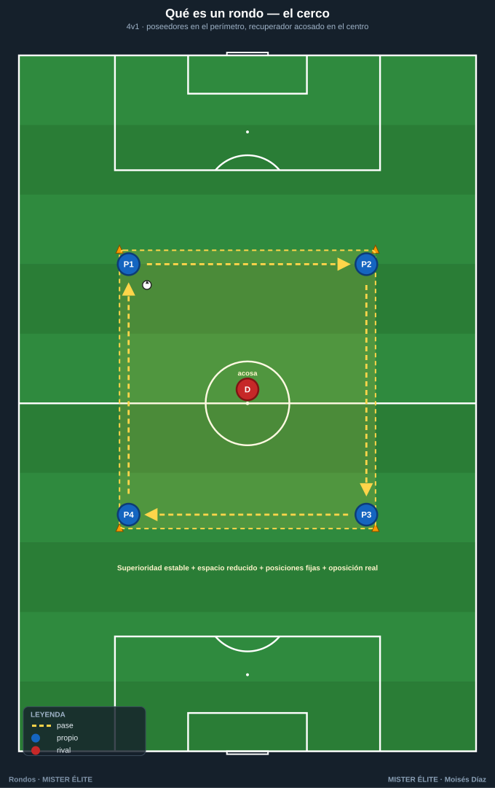
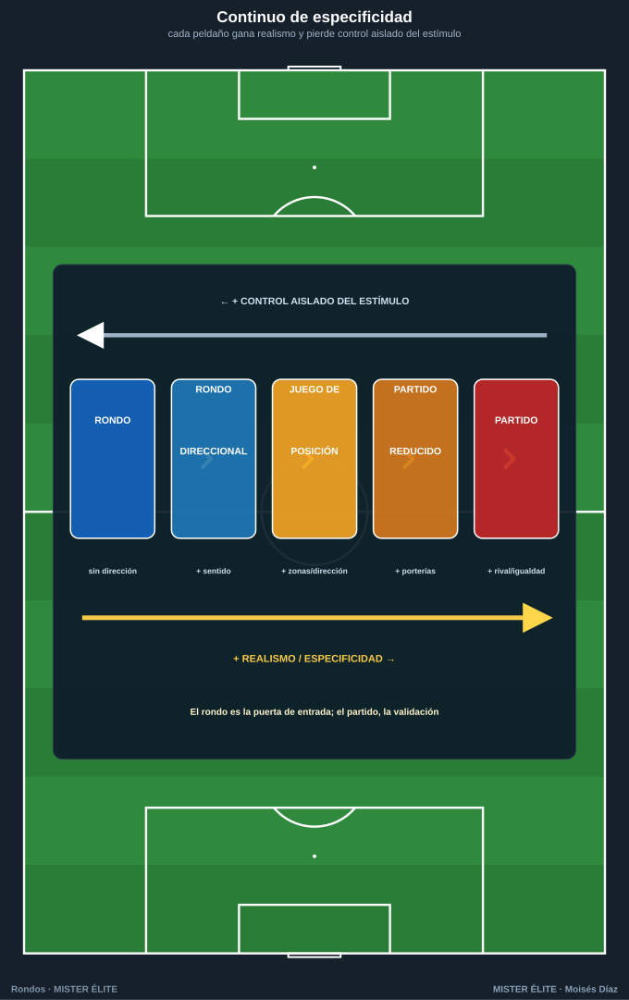
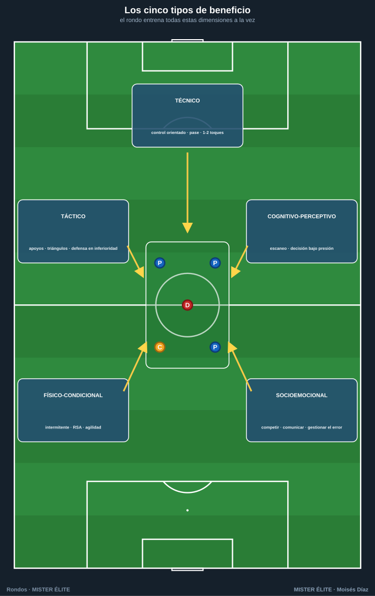

Módulo 01 · Fundamentos de los rondos
Poca teoría, mucha práctica. Este módulo te da lo justo para entender qué es un rondo, de dónde viene y por qué es la tarea reina. A partir del módulo 02 ya estamos diseñando; del 04 en adelante, ejecutando los 50 rondos.
1. Qué es un rondo (definición operativa)
Un rondo es una tarea jugada de mantenimiento–recuperación del balón en superioridad numérica, dentro de un espacio reducido y delimitado, con posiciones de partida fijadas (poseedores normalmente en el perímetro, recuperadores en el centro), donde un grupo conserva la posesión y otro, en inferioridad, intenta robarla.
Cuatro rasgos lo definen y lo distinguen de cualquier otra tarea:
- Superioridad numérica estable para el poseedor (4v1, 5v2, 6v3…). La ventaja es estructural y permanente, no coyuntural.
- Espacio reducido y delimitado (cuadrado, rectángulo, círculo o rombo con conos), que comprime el tiempo y el espacio de decisión.
- Posiciones de partida pre-fijadas: los poseedores ocupan el contorno; el o los recuperadores, el interior. De ahí el característico "cerco" alrededor del que roba.
- Doble objetivo simultáneo y opuesto: un equipo conserva y el otro recupera. Hay oposición real; no es una rueda de pases.

Origen del nombre. En España se le llamó torello ("torito"), porque el del centro persigue el balón como un toro al capote; en el mundo anglosajón, piggy in the middle. "Rondo" (de redondo, jugar en círculo) se impuso después.
Diferencias con tareas vecinas
El rondo se confunde a menudo con el juego de posición y con el partido reducido (SSG). No son lo mismo:
| Criterio | Rondo | Juego de posición | Partido reducido (SSG) |
|---|---|---|---|
| Naturaleza | Tarea / herramienta | Tarea y concepto del modelo de juego | Forma reducida del partido |
| Relación numérica | Superioridad estable (4v1, 5v2…) | Superioridades zonales (3v2, 4v3) por zonas | Tiende a la igualdad |
| Estructura del espacio | Un solo espacio, posiciones fijas | Espacio sectorizado por zonas/pasillos | Campo con porterías, estructura de partido |
| Dirección del juego | Habitualmente sin dirección | Direccional o semidireccional | Direccional: hay portería |
| Objetivo dominante | Conservar y recuperar | Ocupar el espacio para progresar | Competir cercano al partido (con gol) |
| Especificidad | Media (sin porterías) | Alta (dirección, zonas, fases) | Muy alta (es el partido en pequeño) |
Claves para no confundirlos:
- El rondo es la célula básica: máximo control del entrenador, pocas variables, mucha repetición de fundamentos en superioridad.
- El juego de posición añade dirección y sectorización: ya no se conserva por conservar, sino para progresar ocupando bien el espacio. El rondo es su puerta de entrada.
- El partido reducido añade finalización, porterías e igualdad: máxima transferencia, menor control del entrenador.
Conviene verlo como un continuo de especificidad: cada peldaño gana realismo y pierde control aislado del estímulo.

2. Origen e historia (la versión honesta)
- Tradición neerlandesa y Total Football. El rondo es inseparable del Totaalvoetbal del Ajax y la selección neerlandesa de los 70 (Rinus Michels, con Johan Cruyff como referencia). El fútbol total exige recibir, orientarse y pasar bajo presión en espacios pequeños: el rondo es su laboratorio.
- Laureano Ruiz en Barcelona. Un matiz a menudo omitido: el rondo como herramienta sistemática de formación en La Masia se asocia al técnico cántabro Laureano Ruiz, responsable del fútbol base del FC Barcelona desde comienzos de los 70 (y del primer equipo en 1976). Es decir, el rondo estaba en Barcelona antes del Cruyff entrenador.
- Cruyff y la universalización. Cruyff, síntesis de la escuela neerlandesa y la española, lo convirtió en seña de identidad al volver como entrenador del Barça en 1988 (el "Dream Team"), llevándolo al entrenamiento diario y a la rutina previa al partido.
- La Masia y Guardiola. La generación formada en esa cultura (Guardiola incluido) heredó el rondo como gramática básica. Con Pep Guardiola (2008–2012) y su éxito global, las imágenes del rondo dieron la vuelta al mundo: hoy es patrimonio común de cualquier estilo.
"Todo lo que ocurre en un partido, excepto el remate, lo puedes hacer en un rondo." — Johan Cruyff
Cronología en una frase: ejercicios de mantenimiento en círculo ya existían en los 50–60; en los 70 confluyen dos focos (neerlandés y catalán); Cruyff lo institucionaliza (1988–96); Guardiola lo universaliza (2008→). Lo correcto es presentarlo como tradición compartida, sin una paternidad única no documentable.
3. Por qué es la "tarea reina": el principio de especificidad
El jugador se adapta a aquello que entrena de forma parecida a como compite. Por eso el entrenamiento moderno prefiere tareas jugadas frente a ejercicios analíticos: una rueda de pases sin oposición mejora el gesto, pero no la lectura ni la decisión que el partido exige.
El rondo cumple la especificidad mejor que casi cualquier tarea simple:
- Hay balón, oposición y compañeros → se percibe, decide y ejecuta con adversario, no en el vacío.
- El espacio reducido comprime tiempo y distancias → obliga a percibir antes y decidir más rápido; luego el partido "parece más lento".
- Densidad de acciones altísima → decenas de controles, pases, apoyos y presiones por jugador en pocos minutos.
- Integra todas las dimensiones a la vez (técnica, táctica, cognitiva, condicional, emocional), como en la competición.
- Es infinitamente regulable: cambiando número, espacio, toques, comodines y reglas, el mismo formato sirve para objetivos opuestos.
Esa combinación de alta especificidad + alta densidad + máxima regulabilidad es lo que lo hace tarea reina.
Matiz: el rondo es reina, no monarca absoluta. En su forma básica no tiene dirección ni finalización. Por eso necesita progresar hacia rondos direccionales, juego de posición y partido reducido para cerrar la transferencia (módulo 03).
4. Los tipos de beneficio
El rondo entrena todas estas dimensiones a la vez. Las separamos solo para describirlas.

4.1 Técnico
Control orientado y primer toque útil; calidad, peso y timing del pase; uso de todas las superficies y ambas piernas; protección y conducción breve para fijar; ritmo de circulación a uno o dos toques.
4.2 Táctico
Apoyos y ángulos que abren línea de pase; triángulos y rombos permanentes (siempre dos opciones); ampliación del espacio y búsqueda del hombre libre; orientación corporal y cambio de orientación; y, para los del centro, presión tras pérdida y defensa en inferioridad (el lado defensivo del rondo, muy infravalorado).
4.3 Cognitivo-perceptivo
Toma de decisiones bajo presión temporal; escaneo / visión periférica (mirar antes de recibir); anticipación de la presión y del compañero; atención sostenida; reconocimiento de patrones (localizar al hombre libre, la línea abierta).
4.4 Físico-condicional
Acciones intermitentes de alta intensidad (sobre todo para el recuperador); cambios de ritmo y agilidad en espacio corto; RSA (capacidad de repetir esfuerzos cortos); carga regulable con el tamaño del espacio, la relación numérica y el tiempo en el centro.
4.5 Socioemocional
Tensión competitiva del marcador implícito; cohesión y comunicación; gestión del error y del "castigo" simbólico de quedar en el centro; liderazgo y autoexigencia entre iguales.
Ideas clave
- El rondo = superioridad estable + espacio reducido + posiciones fijas + oposición real. Sin oposición y sin reglas, no es un rondo: es una rueda de pases.
- No es lo mismo que el juego de posición (añade dirección y zonas) ni que el partido reducido (añade porterías e igualdad). Son peldaños de un continuo de especificidad.
- Es tradición compartida (neerlandesa + catalana), consolidada en los 70, popularizada por Cruyff y universalizada por Guardiola. Sin paternidad única.
- Es la tarea reina por especificidad + densidad + regulabilidad, pero no monarca absoluta: necesita progresar para llegar al gol.
- Entrena cinco dimensiones a la vez; el jugador del centro entrena la defensa en inferioridad, no pierde el tiempo.
Errores comunes
- Tratarlo solo como calentamiento. Es un uso legítimo, pero reduccionista: bien diseñado, es tarea principal (conservación, presión, RSA, decisión).
- Confundirlo con "jugar al toro" sin objetivo. Sin objetivo, reglas ni feedback, degenera en pasarse el balón.
- Creer que solo sirve a equipos posesionales. Su fase defensiva (presión, robo en inferioridad) es oro para equipos de transición.
- Pensar que no transfiere por no tener porterías. La transferencia se construye progresando (módulo 03), no descartando la herramienta.
- Verlo como ejercicio "solo técnico". Su mayor virtud es integrar técnica, táctica, cognición y condición a la vez.
- "Cuanto más rato, mejor". La calidad cae con la fatiga: series cortas e intensas con foco, no rondos eternos.
MISTER ÉLITE — Moisés Díaz